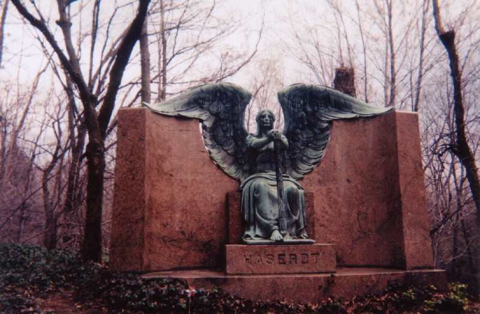
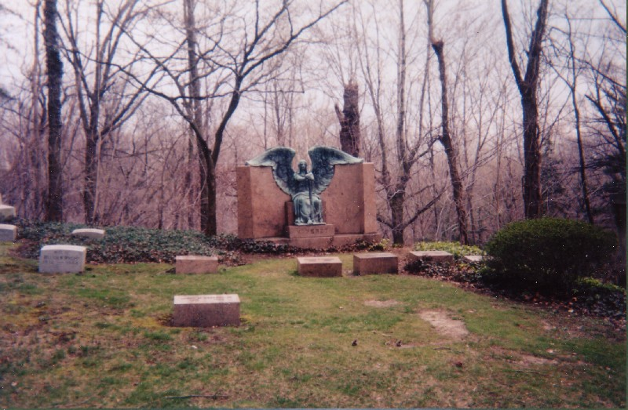
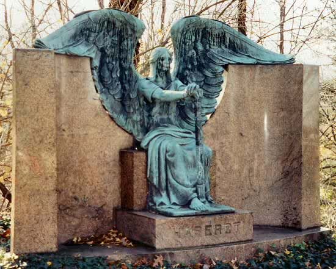
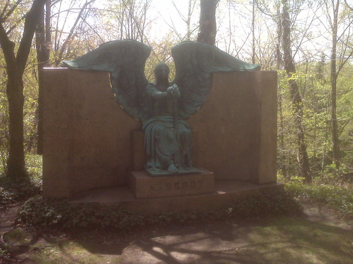
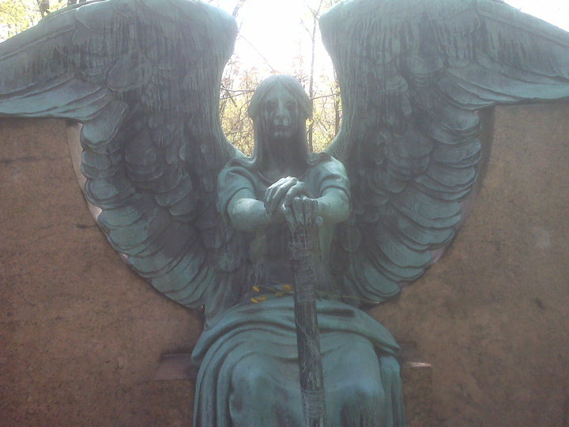
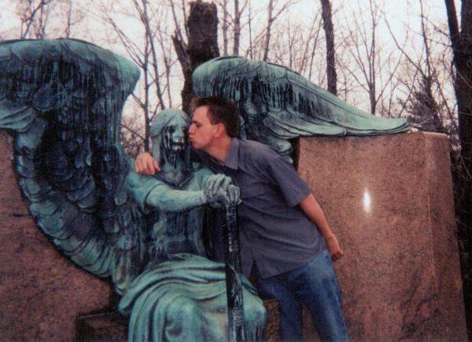

Lake View's most famous piece of graveside sculpture stands atop the grave of Francis Haserot and his family, near the Mark Hanna mausoleum at the edge of the cemetery proper.

Let's ask the obvious questions first: Why, in a public cemetery filled with blandly Christian, even saccharine statuary (Jesus, Mary, sleeping lambs) meant to sooth the bereaved visitor, is this family plot attended by an avenging death angel who gazes forward with pupil-less eyes and weeps black tears??? This statue surely represents the exact opposite of "comforting." Furthermore, who are the cool motherfuckers who commissioned it, placed it atop their family grave plot, and then allowed themselves to be buried in its unholy presence? Were the Haserots a coven of witches? A death metal band? Funeral directors, at least?
No. It turns out they're in the canned goods business, and are famous for institutional size cans and high-quality foodstuffs. Their company, Northen Haserot, still supplies hotels, restaurants, schools, hospitals, and other institutions with canned meats, seafood, dairy, beverages, and produce, as well as certain types of food-service equipment and cleaning chemicals.
Apparently Haserot food really is top shelf stuff. Ken, who e-mailed me on the topic, recalls, "They had a quite good-quality line of products, a cut above many of the better-known brands. Their brand would very rarely be found in grocery stores, but sold quickly when someone was unloading a misplaced shipment. My mother worked for them in the 1950s; she used to bring home samples and we'd chow down and love it."
Northern Haserot was founded in Cleveland in 1892 and has been there ever since. They only ship to the Cleveland, Akron, Canton, Youngstown, Toledo, and Columbus metropolitan areas, but they manage to operate two distribution facilites with 125,000 and 60,000 square feet of space, as well as a USDA federally-inspected meat plant. If those exciting facts aren't enough for you, read more about the company at www.northernhaserot.com.
Who knew the canning business was so sinister? Who can say what awful premonitions of mortality torment the factory boss as he inspects row after endless row of gleaming steel cylinders? What's clear is that the Haserots' skill in shipping big cans of food is surpassed only by their shockingly badass taste in art. The statue we know and love them for having made was sculpted in 1924 by a clearly tormented soul named Herman Matzen. An unanswered question: Did Matzen know that weathering would cause black streaks to drip from its eyes, giving it that extra-nightmarish final touch? I like to think he did.

The name I've always heard attached to the piece is "The Angel of Death Triumphant." (Or possibly "Victorious.") The angel has his hands folded atop something that most people mistakenly call a sword. But what he's holding is actually an upside down torch, signifying a life freshly extinguished. His pose and mien are creepy enough, but the years have streaked his bronze skin and caused discolored metal tears to stream from his blank eyes. (I call the Angel of Death a him because he is traditionally depicted as male, but the Haserot Angel is always a woman to me.) The final product, viewed nearly a century later, is the unholy master of graveyard artwork. I doubt there is another sculpture anywhere that even approaches its wicked beauty.

I've spoken to many, many people who have made long pilgrimages to Cleveland just to see this statue. In a vast cemetery with no shortage of eye-catching memorial art, the Haserot Angel stands head and shoulders above the rest.

If you've made a visit to Lake View you have almost certainly gotten a picture posing with the Angel. (If you haven't, you need to.) One day the Angel of Death will be standing over you with his dead eyes, ready to extinguish your torch forever; when that moment comes you definitely want to be able to say, "Wait a minute! Remember when we hung out at the graveyard? Here's that picture we took together." It might just save your life. But no, really it won't. When the Angel of Death comes for you, he is always triumphant.

But because it's fun to do, lots of people have these Angel selfies, and some have sent them to me. Now I'm putting out an APB for them: Angelselfies Please, Bruh! E-mail them to me at , or even better send them via Facebook to me; is me. And tell me how you'd like to be credited beneath the photo, whether it's your real full name, first-name-last-initial, or as Crabby McHeadlice or some other weirdness. All are welcome.
Selfies with the Angel of Death: A Lake View Tradition
Click to See the Gallery

UNDER CONSTRUCTION
Northern Haserot Foodservice Distribution
A Grave Concern: Haserot Angel
Atlas Obscura: The Haserot Angel
Angel of Death Victorious: The Legend of Cleveland's Haserot Angel
Back